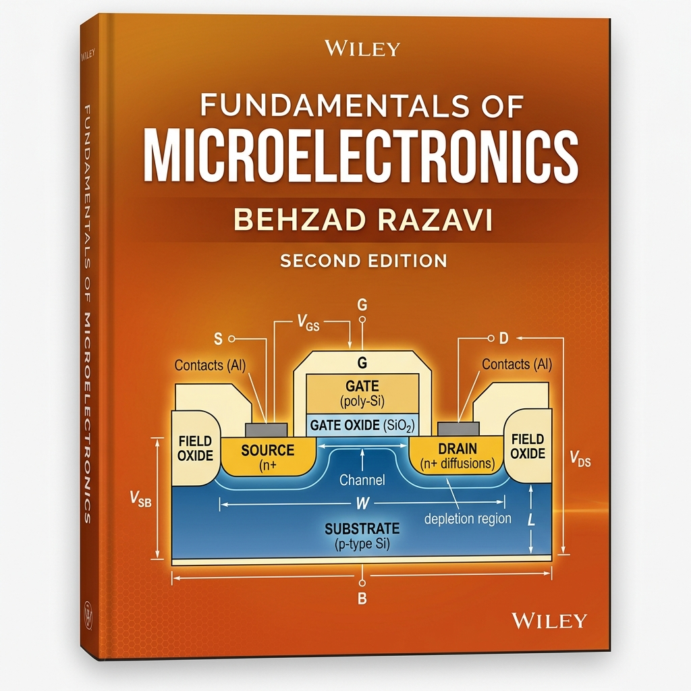
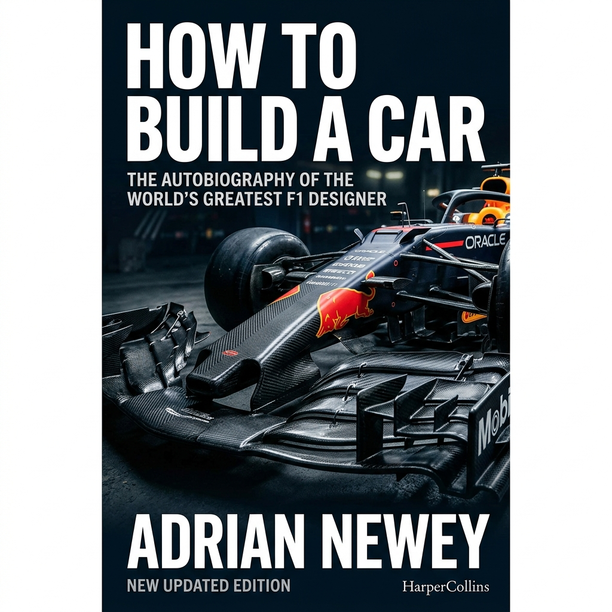
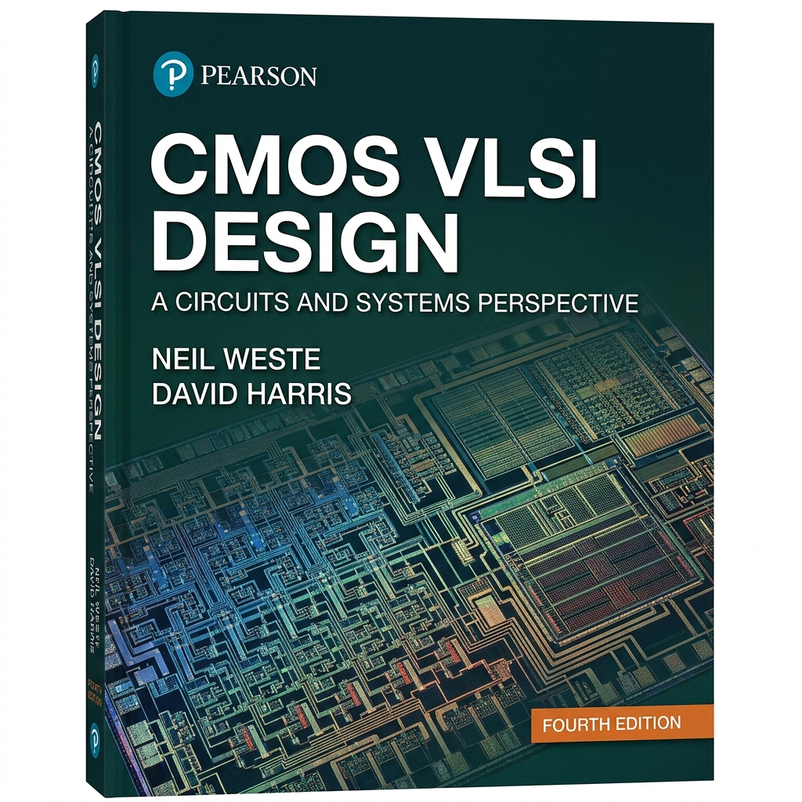
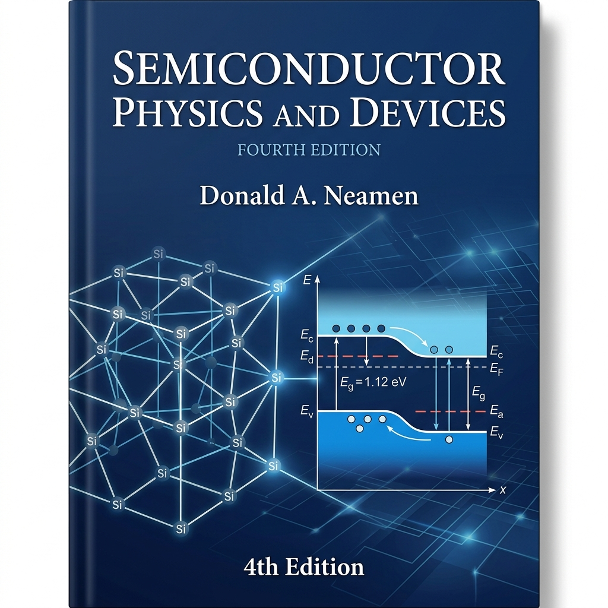
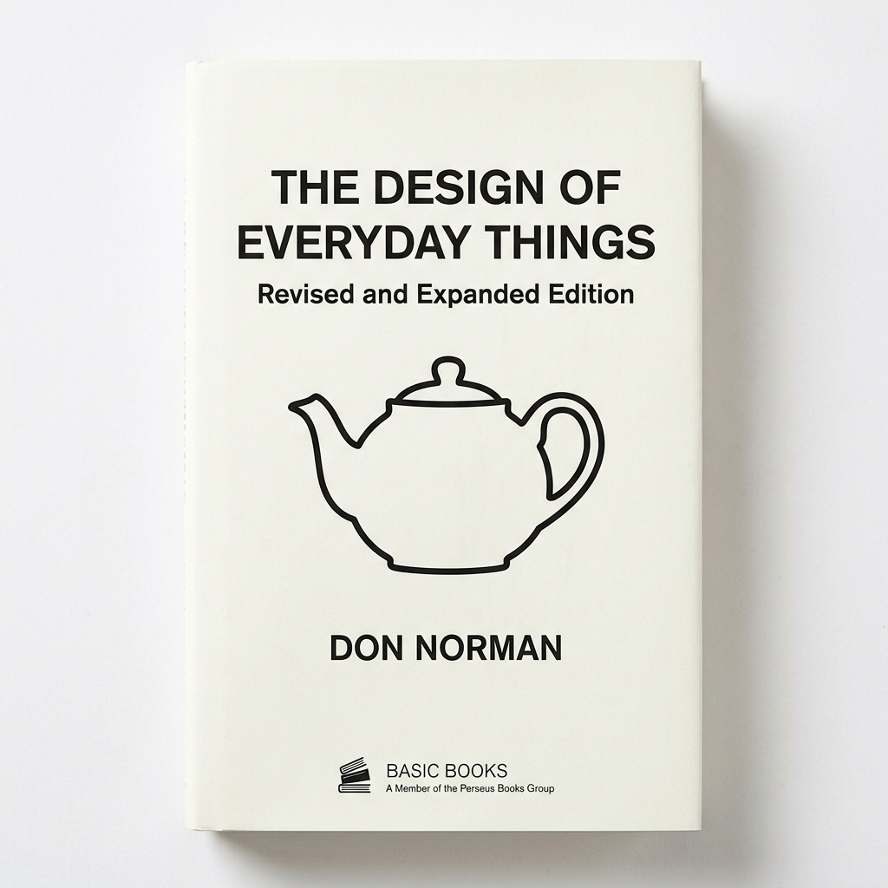

Hello, I am
The Bridge Between Atoms and Systems.
I am a hardware engineer and graduate student fellow at the University of Pennsylvania (MSE Electrical Engineering), working at the intersection of solid-state device physics and mixed-signal IC design.
My engineering philosophy is simple: you cannot design a truly great circuit unless you understand the physics of the transistor beneath it.
This deep-tech research is grounded in rigorous industry execution. Having previously architected robust evaluation hardware at Silicon Laboratories and optimized designs at Cadence, I am now focused on pushing the limits of semiconductor scaling and high-performance analog systems.
Selected Work
Contact
Research & engineering work — hover to interact, click to explore
The foundational layer: understanding and simulating the electron.
Modelling AlScN-based FE-FETs in Synopsys Sentaurus TCAD, replacing standard gate oxides with ferroelectric stacks to match real-life wafer configurations. Characterizing cylindrical AlScN ferroelectric memory arrays using Keithley SCS-4200.
Modelled planar 2D SOI-FET and 3D 14nm FinFET, achieving 3% performance improvement over baseline. Awarded "Research Grade: Excellent" at OUR Conference.
The physical layer: translating theoretical models into manufacturable silicon.
Fabricated freestanding MEMS structures using photolithography, DRIE, and wet etching. Characterized via SEM, AFM, TEM, and profilometry.
Architected a fully decoupled, mode-split MEMS gyroscope on 5 μm SOI DRIE. Engineered 100 Hz frequency split, Poly-Si anchor plugs, and active electrostatic spring tuning.
Block copolymer nanopatterning beyond photolithographic resolution limits. Developing DSA process flows for sub-20nm features.
Developing process flows for GFET fabrication using CVD-grown graphene transferred onto SiO₂/Si substrates.
Colloidal synthesis of CdSe Quantum Dots, characterizing optical properties and nanocrystal size distributions via UV-Vis and TEM.
The systems layer: architecting layout-aware circuits that leverage the physics.
Advanced semiconductor memory architecture design and analysis for high-density, low-power applications.
Designed an 8-stage cascaded TIA achieving 519 kΩ (114 dBΩ) gain, exceeding spec by 3.5×. Maintained 311 MHz bandwidth while driving a heavy 600Ω differential load.
Designed a synchronous SRAM macro achieving 249 ps (~4 GHz) worst-case write access time. Engineered a robust 6T bitcell with Cell Ratio of 1.5, eliminating read-disturb failures.
Designed a modular 3-PCB system hosting an MCU, power management, and peripherals. Created schematics for 4 memory elements, 7 sensors, and 5 GPIO headers.
Thoughts, tangents, and telemetry.





Moments captured through the lens
A condensed timeline. The full story is in the PDF.
2025 – Present
MSE Electrical Engineering · Expected 2027
Focusing on Nanotech & Mixed-Signal IC Design.
ESE Laboratories Staff Member · 2026 – Present
Managing high-precision instrumentation and supporting analog lab sessions.
2023 – 2025
Associate Hardware Engineer · 2023 – 2025
Designed instructional hardware used at UPenn and 21 mixed-signal EVBs.
Hardware Engineering Intern · Jan – Jul 2023
Created schematics for a universal sensor board and aided customer-facing EVB testing.
2022
Hardware Engineering Intern · 2022
Characterized 3nm SerDes PHY schematics in the Memory Interface Group.
2019 – 2023
B.Tech Electronics & Communication · 2019 – 2023
Specialization in Microelectronics; researched SOI-FET & FinFET device modelling.